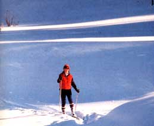
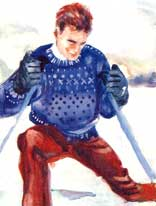
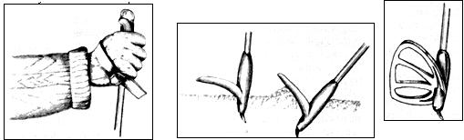
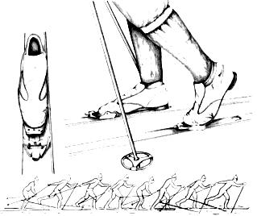
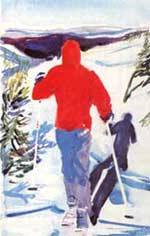

BY THE MINITHERMOMETER DAN gling from the zipper of my day pack, the temperature on this Colorado December morning is a perfect 23°F. Perfect because it's cold enough to keep the several inches of new snow that fell last evening (atop a two-foot-plus base) from going slushy. Perfect also for brisk outdoor exercise; a few degrees more would be verging on too warm for comfortable cross-country skiing.
I, with my friends Nancy and Branson, am out for a morning's tour. The plan is to make a relaxed climb three miles up a snow-closed national forest road, break for lunch, then ski the downhill run-she's steep in places and curved like Mae West-as fast as our skill and equipment will allow.
By the time Branson and Nancy get their beautiful, slick-bottomed wooden skis waxed for climbing, I-on my tacky, old, waxless laminates with their snow-grabbing "stepped" bottoms-am already a quarter mile up the road. A gentleman always, I stop and wait for my companions to join me. (The fact that Branson has the brandy flask and Nancy is toting our lunches has nothing-well, not much-to do with this courtesy.)
The rest of the morning is much the same: I climb steadily while my friends slip, struggle and stop repeatedly to mess with their waxes. I wait. They catch up. And so it goes.
I'm not trying to outshine my friends; I couldn't if I wanted to. Nancy's as good a skier as I, and Branson is better. It's just that slick-bottomed skis, on an upgrade, depending as they do on wax for friction, can't always keep up with waxless models that get their grab from scales, steps or other traction patterns incorporated into their bottoms. We laugh and joke and have a grand old time in spite of the inequities of our equipment-for we all know that payback lies ahead.
As the morning progresses, the ground fog lingering from last evening's storm floats slowly up off this high valley and dissipates. Soon, visible rays of sunlight are fingering down all around us.
We ski on. While our legs do most of the work, our arms share the load by planting long, basket-bottomed poles firmly in the snow and shoving down and back. Done well, the combination of arm and leg work is poetry in graceful motion. No other physical activity, not even swimming, exercises as many muscles as well, while giving so much pleasure in the doing. When you're really into it, your heart and lungs shift into overdrive and stay there as you flick along.
In what seems like no time at all, we reach our goal, a level spot in the road where a summertime foot trail, now obliterated by the snow, snakes off toward an alpine beaver pond. We step off our skis and plant them upright in the snow alongside our poles, then unfold a big plastic tarp and plop ourselves down for lunch. Nancy provides the main course, turkey sandwiches. I produce a Thermos of coffee. Branson hauls out the flask. This is good.
Our bellies full, the sun booming down from a cobalt sky, the temptation is to strip to our Skivvies and lie back for a snooze. This lovely sunshine, however, is a mixed blessing, for already the snow is glistening with a thin film of meltwater, promising, should we dally, a sticky downhill run.
With mixed emotions, we rise and pack up. While Nancy and Branson scrape their skis clean of this morning's "gripping" wax and apply a "fast" wax for the downhill run, I step aboard, snap down the binding bails and push off to gain a bit of a lead. But my lead soon proves insufficient. From close behind, I hear Branson's shout of "Payback!" and the both of them come sizzling past-Sssstt! Sssstt!-crouching low, poles tucked up under their arms, leaning through the first bend and gone. Damned showoffs.
I plug along, skiing mostly under my own power, friction largely overcoming gravity. Not once do I get a fast, free ride of more than a few score yards. The trouble here is that these same waxless skis that were so wonderful for this morning's climb haven't a prayer of matching the downhill speed of Branson's and Nancy's waxers.
Oh, well. I comfort myself in the thought that even as I poke-not effortlessly, but easily and with a great deal of joy-down this lonely, lovely mountain road, my fast-lane companions are, or soon will be, standing in the chill shade beside the truck, waiting. For I have the keys.
SO GOES A TYPICAL MORNING OF cross-country ski touring, mountain-style. Not a penny have we spent nor a lift line have we queued up for; nary a crowded parking lot nor a designer-clad Yuppie have we seen. Just God's own carpet of white beneath our long, skinny skis, a big, blue sky above, and the shared company of good friends.
Now be it known that these simple, inexpensive, wholesome outdoor pleasures are not reserved just for those of us who live in areas where annual snowfall is measured in feet and meters. A few inches of good snow will do nicely. And even if you live down in the Deep South or out on the desert sands, chances are that you'll someday be passing through snow country in winter, where you can rent a cross-country outfit for half a day or longer. If so, do so. You'll like it. The technique is easy to learn when compared to alpine (downhill) skiing, the falls are fewer and the landings softer.
And should you someday decide to purchase your own cross-country (originally known as Nordic) gear, there's better news yet: The price of a middle-of-the-line pair of alpine skis or boots, or even a few days' worth of lift tickets, will buy an entire good crosscountry outfit.
To help you make informed purchases, the following pages offer tips on gearing up.
WHEN PURCHASING CROSS-COUNtry skis, the variables to consider are five: category, length, flex, traction and construction materials.
Just a few years ago, there were but four cross-country ski categories: mountaineering, touring, light touring and racing. Then along came popular recognition for the vintage, but little-known, Nordic technique called Telemarking (making slow, elegant turns on steep downhill slopes) and, following, the appearance of specialized Telemarking skis and related equipment. Most recently, it's "skating," a radical new racing technique. That puts us up to six major cross-country ski categories, with a plethora of subcategories, and who knows what's to come next.
But for all beginners and most experienced off-track skiers, four of those six categories can be tossed out, narrowing the choices to touring and light touring. Touring skis are more streamlined and lighter than mountaineering skis, but sturdier than lighttouring. While sometimes recommended for beginners, touring skis are slightly wider and heavier, and therefore a bit harder to handle, than lighttouring models and are really necessary only if you plan to carry a heavy backpack while skiing on rugged terrain.
Light-touring skis are probably the best choice for most of us-both my pairs are in this category. They're light in weight and streamlined, are easy to control, can handle climbs as well as downhill runs in deep powder and are even happy fast-pacing it along prepared trails and tracks.
The time-honored method for determin ing the proper cross-country ski length is to stand straight with one arm raised above your head and your wrist bent so that your palm is parallel to the floor; select a pair of skis that comes just to your palm. If you're light for your height, you may want skis an inch or two shorter; if you're stout, perhaps an inch or two longer. (If err you must, it's probably better to lean to the short side, for overlong skis will be difficult to turn.)
Most buyers don't worry much about camber stiffness, either. But they should. If you place a pair of cross-country skis back to back, you'll notice that they're arched near the centers-the tips and tails touch while the midsections bow away from each other. This bow is called camber. The resistance a ski's camber has to flattening out under the pressures of weight and thrust is known as camber stiffness. It follows that longer off-track skis, made for taller skiers, usually have stiffer cambers than do shorter skis.
With skis of the proper stiffness, when you push down and back with one leg to power yourself forward, the sudden application of weight and pressure will flatten the camber so that the midsection contacts the snow for increased traction. Then, when you shift weight to the other ski, the camber will return, allowing you to glide.
Camber stiffness ratings are straightforward: soft, medium and hard. While expert skiers can tell by feel if the camber stiffness of a given pair of skis is right, most of us (and most salespersons) can't. Good thing, then, that there's a simple "paper test."
Here's how it works: Cut a sheet of typ ing paper in half lengthwise and place it on a smooth, hard (uncarpeted) floor. Position the skis side by side, with the cambered midsections centered over the paper. Now step on. With your weight distributed evenly on both skis, a helper should be able to pull the paper out-with some resistance, but without tearing. Too little resistance means the camber stiffness is excessive for your weight, while a refusal to let the paper go means you need stiffer skis.
Now, place the paper under the cambered section of one ski at a time, shifting all your weight to that ski. If the camber isn't too stiff, the paper will be locked too firmly to the floor to be withdrawn.
Concerning construction materials: While skis made of a variety of synthetics are available, the best waxable light tourers are of hickory or other hardwoods, while the most practical waxless models are wood-fiberglass laminates. All except the cheapest crosscountry skis will have lignostone, metal or hard plastic edges to provide enhanced control in turns and stops.
Now to address the question of traction: to wax or not to wax? It's largely a matter of personal preference. If you're of the breed who enjoys fine-tuning and fiddling in a never-ending quest for optimum performance, you'll almost certainly enjoy waxing.
But if you want skis you can just step onto and go, on almost any old variety of snow or terrain-no muss, no fuss-then waxless are for you. I'd start with waxless. Just learning to stay upright, get going, turn and stop is enough to keep you occupied during the learning stage-your ski novitiate, as it were-without having to worry about whether to wax with a hard or soft stick, or a klister (a maddeningly gooey gunk that comes in a tube and is used only in the wettest of snow conditions).
Which is not to say that waxing has to be complicated: It's merely a matter of learning to recognize the type, or consistency, of snow you're dealing with, then choosing (often by trial and error) the best wax and application style (streaked on or smoothed out) for those conditions. While wax varieties run into the dozens, for most recreational skiing you can get by with just two stick waxes in the new broad-range formulations-a soft for conditions above freezing (wet, coarse snow), and a hard for below freezing (dry and powdery).
A SPECIAL BEAUTY OF CROSS-COUNTRY skiing is its democratic nature. Standing in an alpine lift line, you're liable to feel out of place if you're not tricked out in the latest designer-priced neon fashions. But out on the snowy countryside, comfortable wool pants and a medium-weight wool or synthetic sweater-sanely priced clothes appropriate for a variety of wintertime outdoor activities-will have you looking in the know.
In fact, you can probably get started with the outdoor clothes you already own. The two most important considerations are layering-so you can don and doff items as necessary to maintain comfort-and avoiding cotton, which, when damp, is like wearing a personal swamp cooler. Clothing that can be unbuttoned or unzipped to allow for ventilation is also a plus, since you must forestall perspiring in order to remain comfortable. Loose-fitting clothing that allows unrestricted movement is also important.
Wool, silk, synthetic or wool-synthetic-blend longies feel reassuring when it's real ly cold. Bulky-knit sweaters create hundreds of tiny dead-air pockets and so make excellent middle layers, while close-knit wool or worsted sweaters keep snow and wind out, providing ideal outer layers. You might also want to pack along a lightweight nylon wind jacket and pants.
Most skiers prefer double-socking: a plush wool outer worn over a thin synthetic liner. Hand protection should be water-resistant and flexible. Try a pair of lightweight wool gloves under water-resistant nylon or poplin shell overmitts. A stocking cap is a necessity. Since you'll be peeling clothing items off and putting them back on several times during the course of atypical cross-country outing, you'll also need a day pack.
While cross-country skiers are often pictured dressed in Scandinavian style-knee socks and knickers-you'll rarely see this among serious tourers, since that's primarily prepared-trail attire. For skiing in soft, untracked snow-the kind that likes to weasel down between boots and socks to wet your ankles-you'll need full-length pants and gaiters (those nylon wraparounds that seal the gaps between pant bottoms and boot tops).
WHILE ALPINE POLES ARE FAIRLY short, cross-country poles are longer. With the poles upside-down, handles on the ground, the baskets-not the tips-should reach up to your armpits or a little above.
Ski-pole baskets are plastic rings mounted a few inches up from the tips. They serve as snowshoes of sorts, giving the poles their flotation. All downhill baskets are round, as are those on many cross-country poles. But triangular and other rear-facing shapes are also popular with Nordic enthusiasts, since their clean front surfaces make it easier to angle the poles forward as you push back with your arms.
Where the tips of downhill ski poles are merely pointed extensions of the poles themselves, cross-country poles, to enhance durability and ease of extraction from packed snow, employ hardened inserts-either round pins bent slightly forward, or flat blades cut on a point-forward bevel.
The three materials most commonly used in the manufacture of cross-country poles are tonkin cane (commonly called bamboo), aluminum alloys and fiberglass. Tonkin is traditional, aesthetic and strong. Fiberglass is even stronger but less attractive, while aluminum-alloy poles are strongest of all but look like-well, aluminum.
UNLIKE THE HIGH, HEAVY, RIGID boots worn by alpine skiers, cross-country boots are low, light and flexible, looking not unlike walking shoes except that the soles are elongated and squared at the toes to accommodate bindings. And while both the toes and heels of downhill boots lock firmly to the skis, only the toes of cross-country boots are fixed, and even then the attachments are in the form of hinges that allow your heels to ride up off the skis. (This must be so, for the kick-and-glide of cross-country skiing is a lot like walking: Each time a leg drops back, that heel must be free to rise.)
Discounting specialized ski-mountaineering, Telemarking and racing boots, choices between cross-country boot styles come down to height, construction materials and binding type. For light touring, most skiers prefer the comfort and lightness of underankle boots. They are, however, less supportive and more prone to shipping snow than are the higher-topped boot styles.
The traditional upper material for cross country boots is leather. It's comfortable, durable and breathable. Its only drawbacks are its high purchase price and slowness to dry once soaked through-which will take a while if the leather is Sno-Sealed, but which virtually never happens when skiing on cold, dry snow. Synthetic uppers are generally less expensive and more waterresistant, but are less durable and don't breathe, leading to damp feet in any event. Soles most often are made of hard rubber or polyurethane.
By far the most common and popular style of cross-country binding is the three-pin. In this system, the aircraft-aluminum binding base, which is fixed to the ski, has three small metal pins spaced 75 mm apart and sticking straight up. The squared boot-toe has three matching, metal-sleeved holes facing down. You simply place your toes over the pins on the binding bases and do a little toe dance until the fittings slip together. Now snap down the hinged bails that clamp the boots firmly to the binding bases, and you're set.
I COULD RAMBLE ON ABOUT KICKS and glides and plough stops and Telemark turns (which I will probably never master by enjoying philosophizing about); in fact, I just might cover suck esoterica one of these wintry days. But skiing is an activity that's best learned by doing. In a discussion of snowshoeing (Mother No. 102), I asserted that if you can walk, you can snowshoe. The same is pretty much true for cross-country skiing-it just takes a bit more practice.
The perfect beginning venture is to visit a cross-country ski center (of which there are many scattered around the snowy states, often located in conjunction with alpine resorts) where equipment rentals, lessons and the use of a groomed track or trail are available for one package price-usually quite reasonable.
With a two-hour lesson in the morning, you'll be kicking and gliding on your own that same afternoon, having a grand old time-cheeks rosy, muscles stretched, lungs purged. It's almost as good as being a kid again.
|
 Most quality poles are fitted with adjustable wrist straps.Asymmetrical baskets ease foreward pole movement. |
 All bindings, including the popular three-pin type, allow free heel movement |
 |
|
 |
 |
|